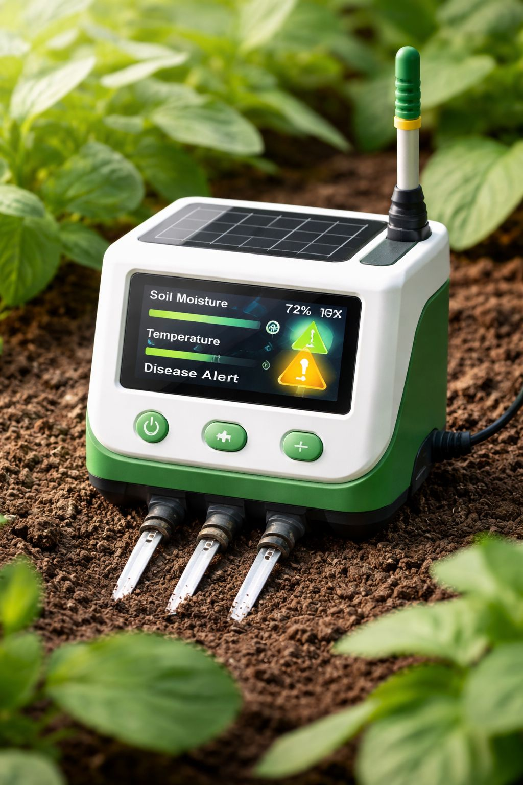

Интеллектуальная система для предотвращения болезней растений
AgroGuard AI анализирует данные почвы, температуры и влажности, используя AI для прогнозирования заболеваний растений до появления симптомов.
До 40% урожая ежегодно теряется. Потери превышают $220 млрд. Фермеры узнают о болезнях слишком поздно.

Снижение потерь даже на 10% спасает миллиарды долларов и улучшает экологию.
Предсказывает болезни заранее.
Подключить к почве и следить за данными.
Фермерам и компаниям.